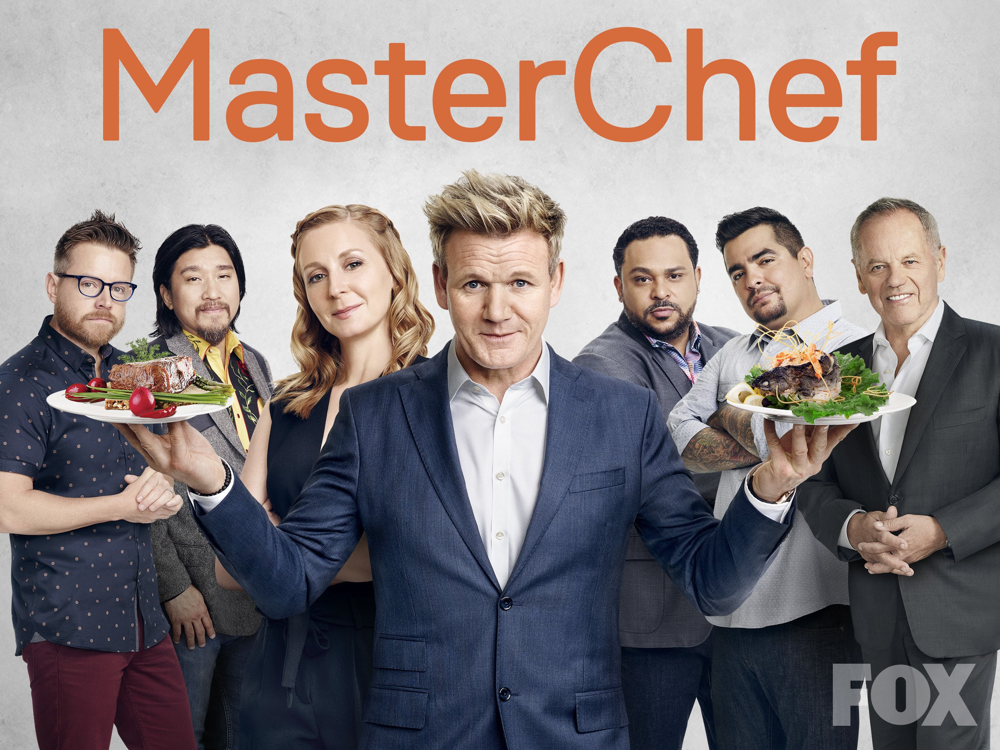
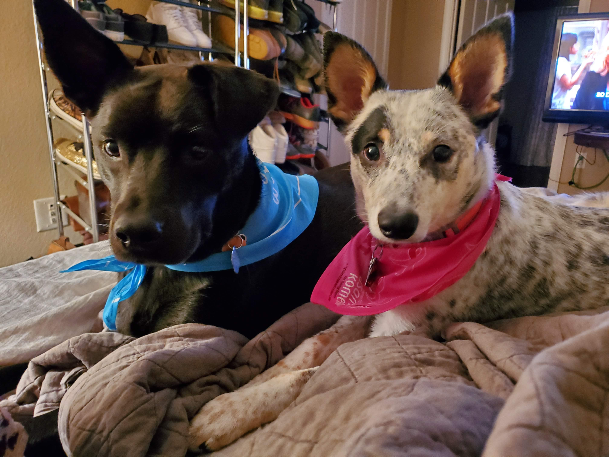

Get to know Randi!
To learn more about Randi I sat down next to her and her mother and asked her personal questions about her profession and what made her fall in love with it.
Her mother helped me to understand her humor and where it derived as their humor was very similar and they enjoy similar shows. I then went to Reddit and read some threads of her favorite shows as they are also some of mine.
Her humor style is dark comedy as her favorite shows all just about had that in common along with cringey drama story lines.
Randi watches various cooking shows and I am the first to say that she uses a lot of what she sees on T.V as actual technique and her cooking is amazing.
Randi's favorite dish to create is lemon stir-fry. Just by examining how she operates in the kitchen, on her work computer, etc. She is very calculated and under control.
This morning I was able to cook her breakfast and asked for her advice and techniques to do it exactly how she does. This allowed me to understand why/how she operates along with her teaching patience and way of delivering instructions.
She takes the dogs everywhere as they are over spoiled but dearly loved. She also uses the Pinterest app a lot which got me to download that app to see why she can get so lost in an app, but it makes sense as you basically “pin” ideas to later review.
I found it to be like Instagram but for design and décor.
The Office

She was introduced to The office in 2010 and it is indeed her favorite show. Her favorite episode is "stress relief" which is a 2 part episode as she would show someone this episode first if they've never seen one.
The show features actors such as:Master Chef
Randi started watching Master Chef in 2016 and had a life-long friend from Omaha on the Master Chef show who made it in the top 10. She has watched the show for at least 5 years and she one day plans to compete on the show. Of course, a lot of her dinner and pastry ideas come directly from Master Chef.
Taye Diggs and Missy Elliott
The male pup on the left is named Taye Diggs who is a 3 year old cattle dog-lab mix. The female pup on the right is named Missy Elliott who is a 2 year old cattle dog-chihuahua mix. She does not currently have children so these two dogs are her world. Often times they all go on walks and wrestle around the house. They're extremely spoiled and do not accept no for an answer.